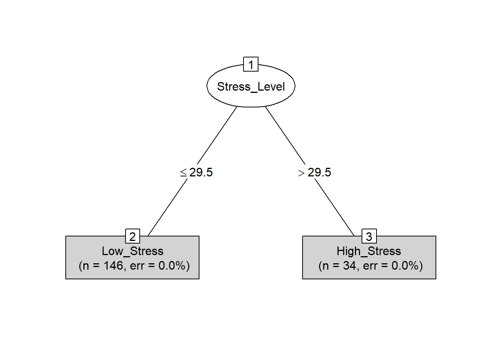

Homework 4
Data Science and Predictive Analytics (HS650), Fall 2021
Kevin Wu
October 2021
Homework_4_HS650_Fall_2021.Rmd.
- HW #4
- Fall 2021, DSPA (HS650)
- Name: Kevin Wu
- SID: ####0012 (last 4 digits only)
- UMich E-mail: kevinkwu@umich.edu
- I certify that the following paper represents my own independent work and conforms with the guidelines of academic honesty described in the UMich student handbook.
- Remember that students are allowed and encouraged to discuss, on a conceptual level, the problems with your class mates, however, this can not involve the exchange of actual code, printouts, solutions, e-mails or other explicit electronic or paper handouts.
library(rvest)
library(tm)
library(wordcloud)
library(plotly)
library(e1071)
library(gmodels)
library(C50)
library(caret)1 HW Problem 4.1
urlSOCR <- read_html("http://wiki.socr.umich.edu/index.php/SOCR_Data_2011_US_JobsRanking#2011_Ranking_of_the_200_most_common_Jobs_in_the_US")
socrDF <- as.data.frame(html_table(html_nodes(urlSOCR, "table")[[1]]))
jsdDF <- socrDF[-1]
jsdDF$Description <- gsub('_', ' ', jsdDF$Description)
#jsdDF$Job_Title <- gsub('_', ' ', jsdDF$Job_Title)
plot_ly(jsdDF, x = ~Stress_Category, y = ~Hiring_Potential, type="box") %>%
layout(title = "Hiring Potential Given Stress Category", xaxis = list(title = "Stress Category"), yaxis = list(title = "Hiring Potential"))plot_ly(jsdDF, x = ~Hiring_Potential, type="histogram") %>%
layout(title = "Hiring Potential Distribution", xaxis = list(title = "Hiring Potential"), bargap=0.1)plot_ly(jsdDF, x = ~Stress_Category, type="histogram") %>%
layout(title = "Stress Category Distribution", xaxis = list(title = "Stress Category"), bargap=0.1)plot_ly(jsdDF, x = ~Stress_Category, y = ~`Average_Income(USD)`, type="box") %>%
layout(title = "Average Income (USD) Given Stress Category", xaxis = list(title = "Stress Category"), yaxis = list(title = "Average Income (USD)"))plot_ly(jsdDF, x = ~Physical_Demand, y = ~`Average_Income(USD)`, type="scatter") %>%
# add_lines(x = ~Physical_Demand, y= ~lm( Physical_Demand ~ `Average_Income(USD)`)) %>%
layout(title = "Average Income (USD) Given Physical Demand", xaxis = list(title = "Physical Demand"), yaxis = list(title = "Average Income (USD)"))set.seed(1234)
subsetInterval <- sample(nrow(jsdDF), floor(nrow(jsdDF) * 0.9)) # 90% training + 10% testing
corpusJSD <- Corpus(VectorSource(jsdDF$Description))
corpusClean <- tm_map(corpusJSD, tolower)
corpusClean <- tm_map(corpusClean, removePunctuation)
corpusClean <- tm_map(corpusClean, removeNumbers)
corpusClean <- tm_map(corpusClean, removeWords, stopwords('english'))
corpusClean <- tm_map(corpusClean, stripWhitespace)
jsdDTM <- DocumentTermMatrix(corpusClean)
jsdDFTrain <- jsdDF[subsetInterval, ]
jsdDFTest <- jsdDF[-subsetInterval, ]
jsdDTMTrain <- jsdDTM[subsetInterval, ]
jsdDTMTest <- jsdDTM[-subsetInterval, ]
jsdCorpusTrain <- corpusClean[subsetInterval]
jsdCorpusTest <- corpusClean[-subsetInterval]
#See Distribution of Stress Categories between Training vs Testing datasets
prop.table(table(jsdDFTrain$Stress_Category))##
## 0 1 2 3 4
## 0.06666667 0.41666667 0.32777778 0.12222222 0.06666667prop.table(table(jsdDFTest$Stress_Category))##
## 1 2 3 4 5
## 0.50 0.25 0.10 0.05 0.10#Binari"ize" Stress label for training and testing datasets
jsdDFTrain$Stress_High <- jsdDFTrain$Stress_Category %in% c(3:5)
jsdDFTrain$Stress_High <- factor(jsdDFTrain$Stress_High, levels = c(F, T), labels = c("Low_Stress", "High_Stress"))
jsdDFTest$Stress_High <- jsdDFTest$Stress_Category %in% c(3:5)
jsdDFTest$Stress_High <- factor(jsdDFTest$Stress_High, levels = c(F, T), labels = c("Low_Stress", "High_Stress"))
prop.table(table(jsdDFTrain$Stress_High))##
## Low_Stress High_Stress
## 0.8111111 0.1888889prop.table(table(jsdDFTest$Stress_High))##
## Low_Stress High_Stress
## 0.75 0.25# separate out low vs high stress from training data for graphics
jsdDFTrainLow <- subset(jsdDFTrain, Stress_High=="Low_Stress")
jsdDFTrainHigh <- subset(jsdDFTrain, Stress_High=="High_Stress")
jsdCorpusTrainLow <- Corpus(VectorSource(jsdDFTrainLow$Description))
jsdCorpusTrainLow <- tm_map(jsdCorpusTrainLow, tolower)
jsdCorpusTrainLow <- tm_map(jsdCorpusTrainLow, removePunctuation)
jsdCorpusTrainLow <- tm_map(jsdCorpusTrainLow, removeNumbers)
jsdCorpusTrainLow <- tm_map(jsdCorpusTrainLow, stripWhitespace)
jsdCorpusTrainLow <- tm_map(jsdCorpusTrainLow, removeWords, stopwords('english'))
jsdCorpusTrainHigh <- Corpus(VectorSource(jsdDFTrainHigh$Description))
jsdCorpusTrainHigh <- tm_map(jsdCorpusTrainHigh, tolower)
jsdCorpusTrainHigh <- tm_map(jsdCorpusTrainHigh, removeNumbers)
jsdCorpusTrainHigh <- tm_map(jsdCorpusTrainHigh, removePunctuation)
jsdCorpusTrainHigh <- tm_map(jsdCorpusTrainHigh, stripWhitespace)
jsdCorpusTrainHigh <- tm_map(jsdCorpusTrainHigh, removeWords, stopwords('english'))
jsdDTMTrainLow <- DocumentTermMatrix(jsdCorpusTrainLow)
jsdDTMTrainLow <- removeSparseTerms(jsdDTMTrainLow, 0.98)
jsdDTMTrainHigh <- DocumentTermMatrix(jsdCorpusTrainHigh)
jsdDTMTrainHigh <- removeSparseTerms(jsdDTMTrainHigh, 0.98)
# Low Stress Jobs
wordcloud(jsdCorpusTrainLow, min.freq = 7, random.order = FALSE, colors = brewer.pal(4, "Dark2"))wordSumLow <- colSums(as.matrix(jsdDTMTrainLow))
plot_ly(x = ~unname(wordSumLow), y = ~names(wordSumLow), type="bar", orientation="h") %>%
layout(title="Common Word Descriptions Low Stress Jobs", xaxis = list(title = "Words"), yaxis = list(title = "Counts"), bargap="0.1")# High Stress Jobs
wordcloud(jsdCorpusTrainHigh, min.freq = 3, random.order = FALSE, colors = brewer.pal(4, "Dark2"))
wordSumHigh <- colSums(as.matrix(jsdDTMTrainHigh))
plot_ly(x = ~unname(wordSumHigh), y = ~names(wordSumHigh), type="bar", orientation="h") %>%
layout(title="Common Word Descriptions High Stress Jobs", xaxis = list(title = "Words"), yaxis = list(title = "Counts"), bargap="0.1")1.1 Naive Bayes
# Create Function to binary"ize" Yes/No whether word appears > 5 times in the DTM and Apply
convertToCounts <- function(wordFrequent) {
wordFrequent <- ifelse(wordFrequent > 0, 1, 0)
wordFrequent < factor(wordFrequent, levels = c(0, 1), labels = c("No", "Yes"))
return(wordFrequent)
}
#create training dictionary object & respective DTMs
jsdDict <- as.character(findFreqTerms(jsdDTMTrain, 5))
jsdDTMTrain <- DocumentTermMatrix(jsdCorpusTrain, list(dictioanry = jsdDict))
jsdDTMTest <- DocumentTermMatrix(jsdCorpusTest, list(dictioanry = jsdDict))
jsdTrain <- apply(jsdDTMTrain, MARGIN = 2, convertToCounts)
jsdTest <- apply(jsdDTMTest, MARGIN = 2, convertToCounts)
jsdClassifier <- naiveBayes(jsdTrain, jsdDFTrain$Stress_High)
jsdBayesPredict <- predict(jsdClassifier, jsdTest)
crossTable <- CrossTable(jsdBayesPredict, jsdDFTest$Stress_High)##
##
## Cell Contents
## |-------------------------|
## | N |
## | N / Table Total |
## |-------------------------|
##
##
## Total Observations in Table: 20
##
##
## | jsdDFTest$Stress_High
## jsdBayesPredict | Low_Stress | High_Stress | Row Total |
## ----------------|-------------|-------------|-------------|
## High_Stress | 15 | 5 | 20 |
## | 0.750 | 0.250 | |
## ----------------|-------------|-------------|-------------|
## Column Total | 15 | 5 | 20 |
## ----------------|-------------|-------------|-------------|
##
## crossTable## $t
## y
## x Low_Stress High_Stress
## High_Stress 15 5
##
## $prop.row
## y
## x Low_Stress High_Stress
## High_Stress 0.75 0.25
##
## $prop.col
## y
## x Low_Stress High_Stress
## High_Stress 1 1
##
## $prop.tbl
## y
## x Low_Stress High_Stress
## High_Stress 0.75 0.251.2 C5.0
jsdTree50 <- C5.0(jsdDFTrain[,-c(1,6,9,10)], jsdDFTrain$Stress_High)
jsdTree50##
## Call:
## C5.0.default(x = jsdDFTrain[, -c(1, 6, 9, 10)], y = jsdDFTrain$Stress_High)
##
## Classification Tree
## Number of samples: 180
## Number of predictors: 6
##
## Tree size: 2
##
## Non-standard options: attempt to group attributessummary(jsdTree50)##
## Call:
## C5.0.default(x = jsdDFTrain[, -c(1, 6, 9, 10)], y = jsdDFTrain$Stress_High)
##
##
## C5.0 [Release 2.07 GPL Edition] Fri Oct 29 04:30:36 2021
## -------------------------------
##
## Class specified by attribute `outcome'
##
## Read 180 cases (7 attributes) from undefined.data
##
## Decision tree:
##
## Stress_Level <= 29.5: Low_Stress (146)
## Stress_Level > 29.5: High_Stress (34)
##
##
## Evaluation on training data (180 cases):
##
## Decision Tree
## ----------------
## Size Errors
##
## 2 0( 0.0%) <<
##
##
## (a) (b) <-classified as
## ---- ----
## 146 (a): class Low_Stress
## 34 (b): class High_Stress
##
##
## Attribute usage:
##
## 100.00% Stress_Level
##
##
## Time: 0.0 secsjsdTree50Predict <- predict(jsdTree50, jsdDFTest[, -c(1,6,9,10)])
confusionMatrix(table(jsdTree50Predict, jsdDFTest$Stress_High))## Confusion Matrix and Statistics
##
##
## jsdTree50Predict Low_Stress High_Stress
## Low_Stress 13 0
## High_Stress 2 5
##
## Accuracy : 0.9
## 95% CI : (0.683, 0.9877)
## No Information Rate : 0.75
## P-Value [Acc > NIR] : 0.09126
##
## Kappa : 0.7647
##
## Mcnemar's Test P-Value : 0.47950
##
## Sensitivity : 0.8667
## Specificity : 1.0000
## Pos Pred Value : 1.0000
## Neg Pred Value : 0.7143
## Prevalence : 0.7500
## Detection Rate : 0.6500
## Detection Prevalence : 0.6500
## Balanced Accuracy : 0.9333
##
## 'Positive' Class : Low_Stress
## plot(jsdTree50, type="simple")
1.3 Multiple Linear Regression
fit <- lm(formula = Overall_Score ~ `Average_Income(USD)` + Work_Environment + Stress_Level + Stress_Category + Physical_Demand + Hiring_Potential, jsdDF)
summary(fit)##
## Call:
## lm(formula = Overall_Score ~ `Average_Income(USD)` + Work_Environment +
## Stress_Level + Stress_Category + Physical_Demand + Hiring_Potential,
## data = jsdDF)
##
## Residuals:
## Min 1Q Median 3Q Max
## -447.49 -32.61 3.68 34.93 232.23
##
## Coefficients:
## Estimate Std. Error t value Pr(>|t|)
## (Intercept) 304.015800 16.578635 18.338 < 2e-16 ***
## `Average_Income(USD)` -0.001157 0.000142 -8.150 4.48e-14 ***
## Work_Environment 0.167649 0.018709 8.961 2.76e-16 ***
## Stress_Level 2.555219 1.608503 1.589 0.114
## Stress_Category 7.975302 15.367294 0.519 0.604
## Physical_Demand 6.555979 0.817788 8.017 1.02e-13 ***
## Hiring_Potential -5.870516 0.402249 -14.594 < 2e-16 ***
## ---
## Signif. codes: 0 '***' 0.001 '**' 0.01 '*' 0.05 '.' 0.1 ' ' 1
##
## Residual standard error: 62.68 on 193 degrees of freedom
## Multiple R-squared: 0.8904, Adjusted R-squared: 0.887
## F-statistic: 261.3 on 6 and 193 DF, p-value: < 2.2e-16plot_ly(x=fit$fitted.values, y=fit$residuals, type="scatter", mode="markers") %>%
layout(title="LM: Fitted-values vs. Model-Residuals",
xaxis=list(title="Fitted"),
yaxis = list(title="Residuals"))step(fit,direction = "backward")## Start: AIC=1662.1
## Overall_Score ~ `Average_Income(USD)` + Work_Environment + Stress_Level +
## Stress_Category + Physical_Demand + Hiring_Potential
##
## Df Sum of Sq RSS AIC
## - Stress_Category 1 1058 759350 1660.4
## <none> 758292 1662.1
## - Stress_Level 1 9915 768207 1662.7
## - Physical_Demand 1 252507 1010798 1717.6
## - `Average_Income(USD)` 1 260999 1019291 1719.3
## - Work_Environment 1 315488 1073780 1729.7
## - Hiring_Potential 1 836837 1595129 1808.8
##
## Step: AIC=1660.38
## Overall_Score ~ `Average_Income(USD)` + Work_Environment + Stress_Level +
## Physical_Demand + Hiring_Potential
##
## Df Sum of Sq RSS AIC
## <none> 759350 1660.4
## - Stress_Level 1 97981 857331 1682.7
## - Physical_Demand 1 255719 1015069 1716.4
## - `Average_Income(USD)` 1 260039 1019389 1717.3
## - Work_Environment 1 316119 1075469 1728.0
## - Hiring_Potential 1 835814 1595164 1806.8##
## Call:
## lm(formula = Overall_Score ~ `Average_Income(USD)` + Work_Environment +
## Stress_Level + Physical_Demand + Hiring_Potential, data = jsdDF)
##
## Coefficients:
## (Intercept) `Average_Income(USD)` Work_Environment
## 299.952496 -0.001151 0.167797
## Stress_Level Physical_Demand Hiring_Potential
## 3.315567 6.583580 -5.861739